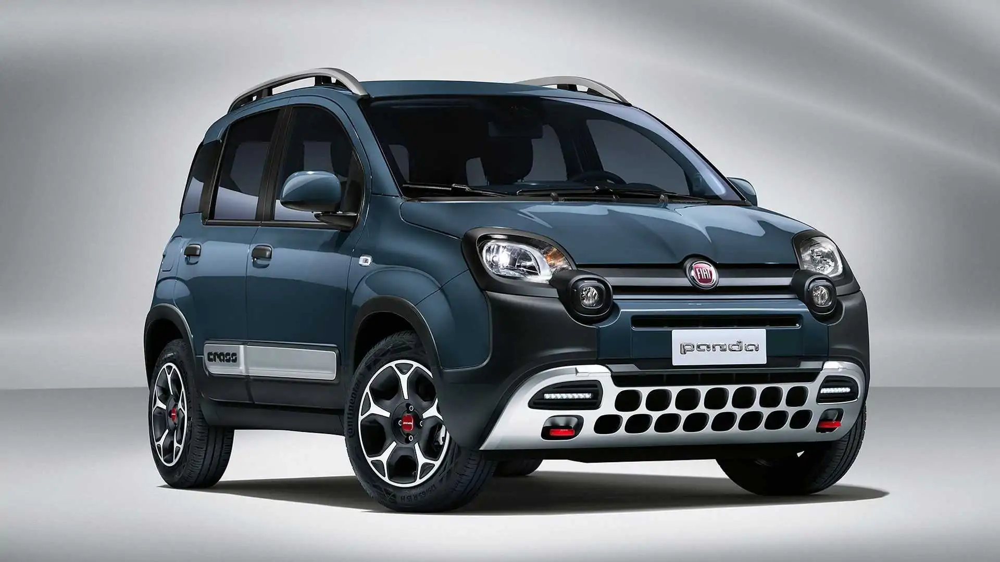
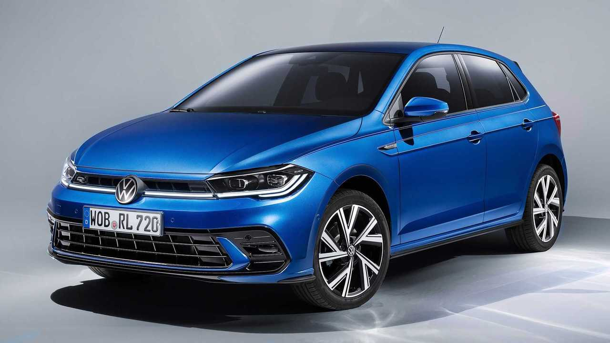
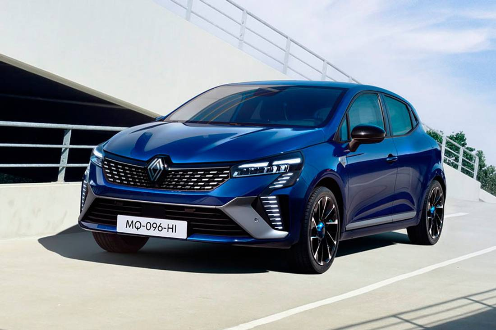

Utilitarie
Le utilitarie sono perfette per l’uso quotidiano in città. Sono economiche nei consumi, facili da parcheggiare e spesso molto affidabili.
Modelli famosi:
- Fiat Panda: Una delle auto più vendute in Italia. Pratica, semplice ed economica.
Sito ufficiale Fiat

- Volkswagen Polo: Qualità tedesca, buon comfort e consumi ridotti.
Sito ufficiale Volkswagen

- Renault Clio: Design moderno, interni spaziosi e tecnologie intuitive.
Sito ufficiale Renault

Torna alla Home